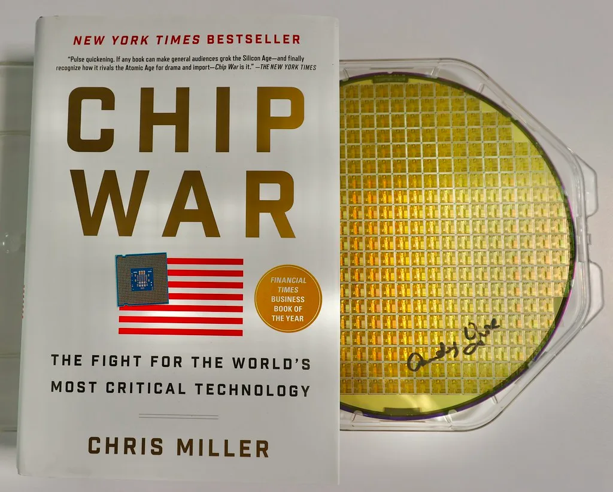
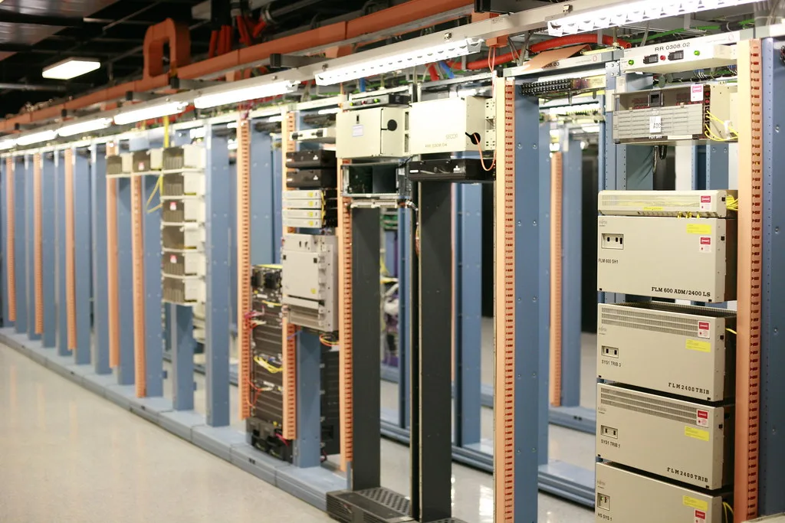

삼성전자, 3분기 영업이익 107.4조원 확정…분기 최초 100조 돌파
삼성전자가 8일 올해 3분기 연결 기준 잠정 실적을 발표했다. 매출은 195조원, 영업이익은 107조4000억원으로 집계됐다. 국내 기업이 단일 분기 영업이익으로 100조원을 넘어선 것은 이번이 처음이다. 영업이익은 지난해 같은 기간과 비교하면 782.5% 늘었고, 영업이익률은 55.1%로 역대 최고치를 다시 썼다. 앞서 증권가에서는 3분기 영업이익을 106조원 안팎으로 추정했는데, 이번 잠정실적은 그 전망치마저 웃돈 수치다.
분기별 흐름을 봐도 상승세가 뚜렷하다. 매출은 전분기인 2분기 171조5000억원보다 13.7% 늘었고, 영업이익은 2분기 89조5000억원에서 20.0% 증가했다. 이로써 삼성전자는 4개 분기 연속으로 분기 기준 사상 최대 실적 기록을 갈아치웠다. 불과 1~2년 전까지 반도체 업황 침체로 적자 우려가 나왔던 것과 비교하면, 업황이 반전된 속도와 폭이 이례적이라는 평가가 나온다. 업계에서는 이런 흐름이 이어질 경우 연간 영업이익 역시 사상 최대치를 다시 쓸 가능성이 크다고 내다보고 있다.

실적을 끌어올린 핵심은 디바이스솔루션(DS) 부문, 그중에서도 메모리 사업이다. 생성형 인공지능 서비스 확산으로 데이터센터 투자 경쟁이 이어지면서 고대역폭메모리(HBM)와 서버용 D램 수요가 공급을 웃도는 상황이 수개월째 지속되고 있다. 이 과정에서 가격 협상력이 제조사 쪽으로 기울었고, 범용 D램과 기업용 솔리드스테이트드라이브(SSD) 등 낸드 제품 판매도 견조한 흐름을 이어간 것으로 파악된다.
업계에서는 메모리 공급사들의 수익성이 과거 호황기와는 질적으로 다른 수준에 올라섰다는 평가가 나온다. 하이퍼스케일러로 불리는 대형 클라우드 기업들이 데이터센터 증설을 위해 장기 공급계약 물량을 선제적으로 확보하려는 움직임을 보이면서, 메모리 제조사 입장에서는 안정적인 수요처를 미리 확보하는 효과까지 누리는 구조가 만들어졌다. 이런 흐름이 3분기 실적에도 고스란히 반영됐다는 분석이다.

다만 시장의 시선은 성장세가 둔화하고 있는 신호에도 쏠린다. 영업이익 증가율이 분기마다 큰 폭으로 꺾이고 있다는 지적이 나오는데, 이는 기저 효과가 점차 옅어지는 자연스러운 흐름이라는 해석과, 메모리 슈퍼사이클의 정점이 가까워지고 있다는 해석이 함께 나오는 상황이다. 투자자들은 이번 잠정실적 발표 이후 나올 사업부문별 세부 수치와 4분기 전망에 더 주목하고 있다.
이날 삼성전자의 '깜짝' 수준 실적 발표에도 코스피는 혼조세를 보였다. 미국 금리 인상 우려와 글로벌 증시 전반의 불안이 겹치면서 지수는 하락 출발 후 6700대 후반에서 등락했다. 삼성전자 주가도 장중 소폭 내림세를 나타냈는데, 이는 실적 자체보다는 이미 시장에 상당 부분 반영된 기대치와 외부 변수에 더 민감하게 반응한 결과로 풀이된다.
삼성전자의 확정 실적과 사업부문별 세부 내용은 이달 말 예정된 컨퍼런스콜에서 공개될 예정이다. 업계는 메모리 가격 추이와 HBM 공급 계약 현황, 4분기 이후 투자 계획 등이 주요 관전 포인트가 될 것으로 보고 있다. 반도체 업황의 지속 가능성을 둘러싼 논쟁이 이어지는 가운데, 이번 실적이 한국 경제 전반에 미칠 파급효과에도 관심이 집중되고 있다. 국내 기업이 글로벌 빅테크를 통틀어서도 분기 영업이익 100조원을 넘어선 것은 이번이 처음이라는 점에서, 이번 실적은 산업계 안팎에서 상징적인 사건으로 받아들여지고 있다. 다만 메모리 한 품목에 실적이 이렇게까지 크게 좌우되는 구조에 대한 우려도 함께 제기되는 만큼, 파운드리나 시스템반도체 등 비메모리 부문의 경쟁력 강화가 다음 과제로 꼽힌다.